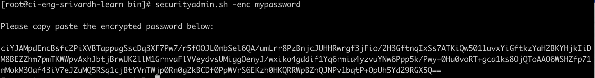
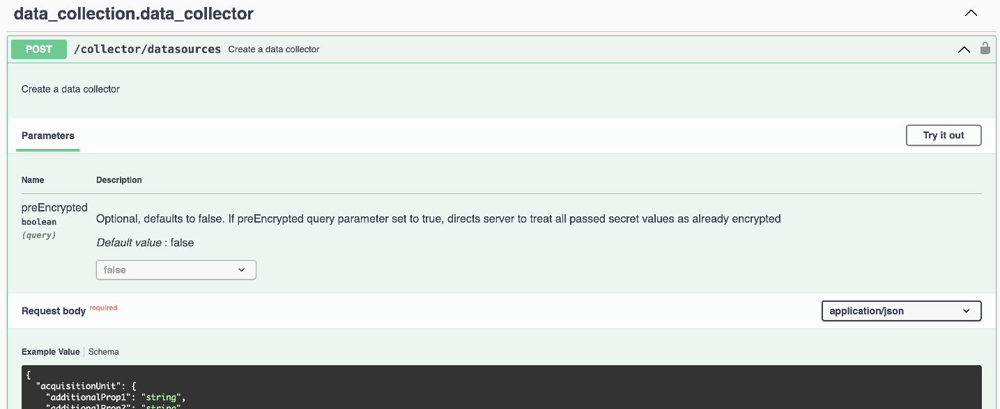
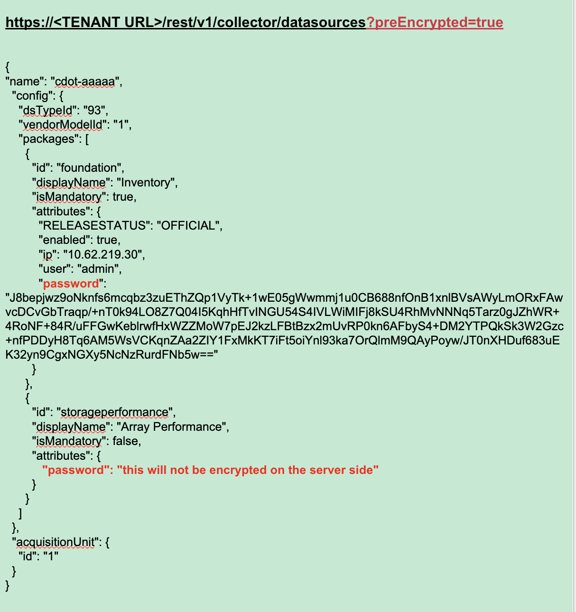

Security
Security
SecurityAdmin Tool
 Suggest changes
Suggest changes
Cloud Insights Includes security features that allow your environment to operate with enhanced security. The features include improvements to encryption, password hashing, and the ability to change internal user passwords as well as key pairs that encrypt and decrypt passwords.
To protect sensitive data, NetApp recommends you change the default keys and the Acquisition user password after an installation or upgrade.
Data source encrypted passwords are stored in Cloud Insights, which uses a a public key to encrypt passwords when a user enters them in a data collector configuration page. Cloud Insights does not have the private keys required to decrypt the data collector passwords; only Acquisition Units (AUs) have the data collector private key required to decrypt data collector passwords.
Upgrade and installation considerations
When your Insight system contains non-default security configurations (i.e. you have rekeyed passwords), you must back up your security configurations. Installing new software, or in some cases upgrading software, reverts your system to a default security configuration. When your system reverts to the default configuration, you must restore the non-default configuration in order for the system to operate correctly.
Managing security on the acquisition unit
The SecurityAdmin tool allows you to manage security options for Cloud Insights, and is run on the acquisition unit system. Security management includes managing keys and passwords, saving and restoring security configurations you create or restoring configurations to the default settings.
Before you begin
-
You must have admin privileges on the AU system in order to install the Acquisition Unit software (which includes the SecurityAdmin tool).
-
If you have non-admin users who will subsequently need to access the SecurityAdmin tool, they must be added to the cisys group. The cisys group is created during AU installation.
After AU install, the SecurityAdmin tool is found on the acquisition unit system at either of these locations:
Windows - C:\Program Files\SANscreen\securityadmin\bin\securityadmin.bat Linux - /bin/oci-securityadmin.sh
Using the SecurityAdmin Tool
Start the SecurityAdmin tool in interactive mode (-i).

|
It is recommended to use the SecurityAdmin tool in interactive mode, to avoid passing secrets on the command line, which can be captured in logs. |
The following options are displayed:

-
Backup
Creates a backup zip file of the vault containing all passwords and keys and places the file in a location specified by the user, or in the following default locations:
Windows - C:\Program Files\SANscreen\backup\vault Linux - /var/log/netapp/oci/backup/vault
It is recommended that vault backups be kept secure, as they include sensitive information.
-
Restore
Restores the zip backup of the vault that was created. Once restored, all passwords and keys are reverted to values existing at the time of the backup creation.
Restore can be used to synchronize passwords and keys on multiple servers, for example using these steps: 1) Change encryption keys on the AU. 2) Create a backup of the vault. 3) Restore the vault backup to each of the AUs.
-
Register / Update External Key Retrieval Script
Use an external script to register or change the AU encryption keys used to encrypt or decrypt device passwords.
When you change encryption keys, you should back up your new security configuration so that you can restore it after an upgrade or installation.
Note this option is only available on Linux.
When using your own key retrieval script with the SecurityAdmin tool, keep the following in mind:
-
The current supported Algorithm is RSA with minimum 2048 bits.
-
The script must return the private and public keys in plain text. The script must not return encrypted private and public keys.
-
The script should return raw, encoded contents (PEM format only).
-
The external script must have execute permissions.
-
-
Rotate Encryption Keys
Rotate your encryption keys (un-registers current keys and registers new keys). To use a key from an external key management system, you must specify the public key id and private key id.
-
Reset to Default Keys
Resets acquisition user password and acquisition user encryption keys to default values, Default values are those provided during installation.
-
Change Truststore Password
Change the password of the truststore.
-
Change Keystore Password
Change the password of the keystore.
-
Encrypt Collector Password
Encrypt data collector password.
-
Exit
Exit the SecurityAdmin tool.
Chose the option you want to configure and follow the prompts.
Specifying a user to run the tool
If you are in a controlled, security-conscious environment, you may not have the cisys group but may still want specific users to run the SecurityAdmin tool.
You can achieve this by manually installing the AU software and specifying the user/group for whom you want access.
-
Using the API, download the CI Installer to the AU system and unzip it.
-
You will need a one-time authorization token. See the API Swagger documentation (Admin > API Access and select the API Documentation link) and find the GET /au/oneTimeToken API section.
-
Once you have the token, use the GET /au/installers/{platform}/{version} API to download the installer file. You will need to provide platform (Linux or Windows) as well as installer version.
-
-
Copy the downloaded installer file to the AU system and unzip it.
-
Navigate to the folder containing the files, and run the installer as root, specifying the user and group:
./cloudinsights-install.sh <User> <Group>
If the specified user and/or group do not exist, they will be created. The user will have access to the SecurityAdmin tool.
Updating or Removing Proxy
The SecurityAdmin tool can be used to set or remove proxy information for the Acquisition Unit by running the tool with the -pr parameter:
[root@ci-eng-linau bin]# ./securityadmin -pr
usage: securityadmin -pr -ap <arg> | -h | -rp | -upr <arg>
The purpose of this tool is to enable reconfiguration of security aspects
of the Acquisition Unit such as encryption keys, and proxy configuration,
etc. For more information about this tool, please check the Cloud Insights
Documentation.
-ap,--add-proxy <arg> add a proxy server. Arguments: ip=ip
port=port user=user password=password
domain=domain
(Note: Always use double quote(") or single
quote(') around user and password to escape
any special characters, e.g., <, >, ~, `, ^,
!
For example: user="test" password="t'!<@1"
Note: domain is required if the proxy auth
scheme is NTLM.)
-h,--help
-rp,--remove-proxy remove proxy server
-upr,--update-proxy <arg> update a proxy. Arguments: ip=ip port=port
user=user password=password domain=domain
(Note: Always use double quote(") or single
quote(') around user and password to escape
any special characters, e.g., <, >, ~, `, ^,
!
For example: user="test" password="t'!<@1"
Note: domain is required if the proxy auth
scheme is NTLM.)
For example, to remove the proxy, run this command:
[root@ci-eng-linau bin]# ./securityadmin -pr -rp
You must restart the Acquisition Unit after running the command.
To update a proxy, the command is
./securityadmin -pr -upr <arg>
External Key Retrieval
If you provide a UNIX shell script, it can be executed by the acquisition unit to retrieve the private key and the public key from your key management system.
To retrieve the key, Cloud Insights will execute the script, passing in two parameters: key id and key type. Key id can be used to identify the key in your key management system. Key type is either "public" or "private". When the key type is "public", the script must return the public key. When the key type is "private", the private key must be returned.
To send the key back to the acquisition unit, the script must print the key to standard output. The script must print only the key to standard output; no other text must be printed to standard output. Once the requested key is printed to the standard output, the script must exit with an exit code of 0; any other return code is considered an error.
The script must be registered with the acquisition unit using the SecurityAdmin tool, which will execute the script along with the acquisition unit. The script must have read and execute permission for the root and "cisys" user. If the shell script is modified after registering, the modified shell script must be re-registered with the acquisition unit.
input parameter: key id |
Key identifier used to identify the key in the customers key management system. |
input parameter: key type |
public or private. |
output |
The requested key must be printed to the standard output. 2048 bit RSA key is currently supported. Keys must be encoded and printed in the following format - |
exit code |
Exit code of zero for success. All other exit values are considered failure. |
script permissions |
Script must have read and execute permission for the root and "cisys" user. |
logs |
Script executions are logged. Logs can be found in - |
Encrypting a Password for use in API
Option 8 allows you to encrypt a password, which you can then pass to a data collector via API.
Start the SecurityAdmin tool in interactive mode and select option 8: Encrypt Password.
securityadmin.sh -i
You are prompted to enter the password you want to encrypt. Note that the characters you type are not shown on screen. Re-enter the password when prompted.
Alternatively, if you will use the command in a script, on a command line use securityadmin.sh with the "-enc" parameter, passing in your unencrypted password:
securityadmin -enc mypassword

The encrypted password is displayed on screen. Copy the entire string including any leading or trailing symbols.

To send the encrypted password to a data collector, you can use the Data Collection API. The swagger for this API can be found at Admin > API Access and click the "API Documentation" link. Select the "Data Collection" API type. Under the data_collection.data_collector heading, choose the /collector/datasources POST API for this example.

If you set the preEncrypted option to True, any password you pass through the API command will be treated as already encrypted; the API will not re-encrypt the password(s). When building your API, simply paste the previously-encrypted password in the appropriate location.
